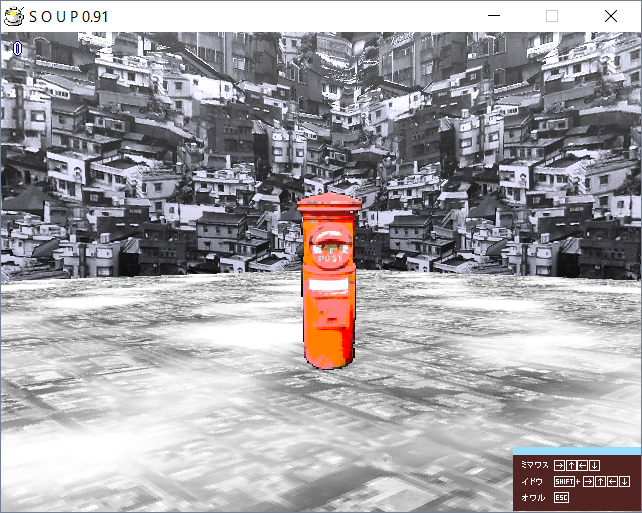

| Photo |  |
| Day | 5 |
| Internal Name | donroom4 |
| Creator | Yarhalla/Don |
| Prefix | don |
Town Room (donroom4) is a room accessible from Day 5. It was made by Yarhalla/Don.
The room is reminiscent of an urban city, with the music being birds chirping in the background.
The room seems to be high up in the sky, as evident by the floor texture featuring tops of buildings and clouds.
The object looks to be an tall orange mailbox with the word "POST" on it.
◄ Commercial Room (tarroom2) | Go back to Rooms | Flooded Rave Room (katroom1) ►